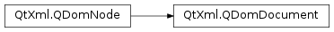

QDomDocument¶
Synopsis¶
Functions¶
- def
createAttribute(name) - def
createAttributeNS(nsURI, qName) - def
createCDATASection(data) - def
createComment(data) - def
createDocumentFragment() - def
createElement(tagName) - def
createElementNS(nsURI, qName) - def
createEntityReference(name) - def
createProcessingInstruction(target, data) - def
createTextNode(data) - def
doctype() - def
documentElement() - def
elementById(elementId) - def
elementsByTagName(tagname) - def
elementsByTagNameNS(nsURI, localName) - def
implementation() - def
importNode(importedNode, deep) - def
setContent(dev) - def
setContent(dev, namespaceProcessing) - def
setContent(source, namespaceProcessing) - def
setContent(source, reader) - def
setContent(text) - def
setContent(text) - def
setContent(text, namespaceProcessing) - def
setContent(text, namespaceProcessing) - def
toByteArray([arg__1=1]) - def
toString([arg__1=1])
Detailed Description¶
The
PySide2.QtXml.QDomDocumentclass represents an XML document.The
PySide2.QtXml.QDomDocumentclass represents the entire XML document. Conceptually, it is the root of the document tree, and provides the primary access to the document’s data.Since elements, text nodes, comments, processing instructions, etc., cannot exist outside the context of a document, the document class also contains the factory functions needed to create these objects. The node objects created have an
PySide2.QtXml.QDomNode.ownerDocument()function which associates them with the document within whose context they were created. The DOM classes that will be used most often arePySide2.QtXml.QDomNode,PySide2.QtXml.QDomDocument,PySide2.QtXml.QDomElementandPySide2.QtXml.QDomText.The parsed XML is represented internally by a tree of objects that can be accessed using the various QDom classes. All QDom classes only reference objects in the internal tree. The internal objects in the DOM tree will get deleted once the last QDom object referencing them or the
PySide2.QtXml.QDomDocumentitself is deleted.Creation of elements, text nodes, etc. is done using the various factory functions provided in this class. Using the default constructors of the QDom classes will only result in empty objects that cannot be manipulated or inserted into the Document.
The
PySide2.QtXml.QDomDocumentclass has several functions for creating document data, for example,PySide2.QtXml.QDomDocument.createElement(),PySide2.QtXml.QDomDocument.createTextNode(),PySide2.QtXml.QDomDocument.createComment(),PySide2.QtXml.QDomDocument.createCDATASection(),PySide2.QtXml.QDomDocument.createProcessingInstruction(),PySide2.QtXml.QDomDocument.createAttribute()andPySide2.QtXml.QDomDocument.createEntityReference(). Some of these functions have versions that support namespaces, i.e.PySide2.QtXml.QDomDocument.createElementNS()andPySide2.QtXml.QDomDocument.createAttributeNS(). ThePySide2.QtXml.QDomDocument.createDocumentFragment()function is used to hold parts of the document; this is useful for manipulating for complex documents.The entire content of the document is set with
PySide2.QtXml.QDomDocument.setContent(). This function parses the string it is passed as an XML document and creates the DOM tree that represents the document. The root element is available usingPySide2.QtXml.QDomDocument.documentElement(). The textual representation of the document can be obtained usingPySide2.QtXml.QDomDocument.toString().Note
The DOM tree might end up reserving a lot of memory if the XML document is big. For such documents, the
PySide2.QtCore.QXmlStreamReaderor thePySide2.QtXmlPatterns.QXmlQueryclasses might be better solutions.It is possible to insert a node from another document into the document using
PySide2.QtXml.QDomDocument.importNode().You can obtain a list of all the elements that have a particular tag with
PySide2.QtXml.QDomDocument.elementsByTagName()or withPySide2.QtXml.QDomDocument.elementsByTagNameNS().The QDom classes are typically used as follows:
doc = QDomDocument("mydocument") file = QFile("mydocument.xml") if not file.open(QIODevice::ReadOnly): return if not doc.setContent(&file): file.close() return file.close() # print out the element names of all elements that are direct children # of the outermost element. docElem = doc.documentElement() n = docElem.firstChild() while not n.isNull(): e = n.toElement() # try to convert the node to an element. if not e.isNull(): print e.tagName() # the node really is an element. n = n.nextSibling() } # Here we append a new element to the end of the document elem = doc.createElement("img") elem.setAttribute("src", "myimage.png") docElem.appendChild(elem)Once
docandelemgo out of scope, the whole internal tree representing the XML document is deleted.To create a document using DOM use code like this:
doc = QDomDocument("MyML") root = doc.createElement("MyML") doc.appendChild(root) tag = doc.createElement("Greeting") root.appendChild(tag) t = doc.createTextNode("Hello World") tag.appendChild(t) xml = doc.toString()For further information about the Document Object Model see the Document Object Model (DOM) Level 1 and Level 2 Core Specifications.
-
class
PySide2.QtXml.QDomDocument¶ -
class
PySide2.QtXml.QDomDocument(x) -
class
PySide2.QtXml.QDomDocument(doctype) -
class
PySide2.QtXml.QDomDocument(name) Parameters: - doctype –
PySide2.QtXml.QDomDocumentType - name – unicode
- x –
PySide2.QtXml.QDomDocument
Constructs an empty document.
Constructs a copy of
x.The data of the copy is shared (shallow copy): modifying one node will also change the other. If you want to make a deep copy, use
PySide2.QtXml.QDomNode.cloneNode().Creates a document with the document type
doctype.Creates a document and sets the name of the document type to
name.- doctype –
-
PySide2.QtXml.QDomDocument.createAttribute(name)¶ Parameters: name – unicode Return type: PySide2.QtXml.QDomAttrCreates a new attribute called
namethat can be inserted into an element, e.g. usingQDomElement.setAttributeNode().If
nameis not a valid XML name, the behavior of this function is governed byQDomImplementation.InvalidDataPolicy.
-
PySide2.QtXml.QDomDocument.createAttributeNS(nsURI, qName)¶ Parameters: - nsURI – unicode
- qName – unicode
Return type: Creates a new attribute with namespace support that can be inserted into an element. The name of the attribute is
qNameand the namespace URI isnsURI. This function also setsQDomNode.prefix()andQDomNode.localName()to appropriate values (depending onqName).If
qNameis not a valid XML name, the behavior of this function is governed byQDomImplementation.InvalidDataPolicy.
-
PySide2.QtXml.QDomDocument.createCDATASection(data)¶ Parameters: data – unicode Return type: PySide2.QtXml.QDomCDATASectionCreates a new CDATA section for the string
valuethat can be inserted into the document, e.g. usingQDomNode.appendChild().If
valuecontains characters which cannot be stored in a CDATA section, the behavior of this function is governed byQDomImplementation.InvalidDataPolicy.
-
PySide2.QtXml.QDomDocument.createComment(data)¶ Parameters: data – unicode Return type: PySide2.QtXml.QDomCommentCreates a new comment for the string
valuethat can be inserted into the document, e.g. usingQDomNode.appendChild().If
valuecontains characters which cannot be stored in an XML comment, the behavior of this function is governed byQDomImplementation.InvalidDataPolicy.
-
PySide2.QtXml.QDomDocument.createDocumentFragment()¶ Return type: PySide2.QtXml.QDomDocumentFragmentCreates a new document fragment, that can be used to hold parts of the document, e.g. when doing complex manipulations of the document tree.
-
PySide2.QtXml.QDomDocument.createElement(tagName)¶ Parameters: tagName – unicode Return type: PySide2.QtXml.QDomElementCreates a new element called
tagNamethat can be inserted into the DOM tree, e.g. usingQDomNode.appendChild().If
tagNameis not a valid XML name, the behavior of this function is governed byQDomImplementation.InvalidDataPolicy.
-
PySide2.QtXml.QDomDocument.createElementNS(nsURI, qName)¶ Parameters: - nsURI – unicode
- qName – unicode
Return type: Creates a new element with namespace support that can be inserted into the DOM tree. The name of the element is
qNameand the namespace URI isnsURI. This function also setsQDomNode.prefix()andQDomNode.localName()to appropriate values (depending onqName).If
qNameis an empty string, returns a null element regardless of whether the invalid data policy is set.
-
PySide2.QtXml.QDomDocument.createEntityReference(name)¶ Parameters: name – unicode Return type: PySide2.QtXml.QDomEntityReferenceCreates a new entity reference called
namethat can be inserted into the document, e.g. usingQDomNode.appendChild().If
nameis not a valid XML name, the behavior of this function is governed byQDomImplementation.InvalidDataPolicy.
-
PySide2.QtXml.QDomDocument.createProcessingInstruction(target, data)¶ Parameters: - target – unicode
- data – unicode
Return type: Creates a new processing instruction that can be inserted into the document, e.g. using
QDomNode.appendChild(). This function sets the target for the processing instruction totargetand the data todata.If
targetis not a valid XML name, or data if contains characters which cannot appear in a processing instruction, the behavior of this function is governed byQDomImplementation.InvalidDataPolicy.
-
PySide2.QtXml.QDomDocument.createTextNode(data)¶ Parameters: data – unicode Return type: PySide2.QtXml.QDomTextCreates a text node for the string
valuethat can be inserted into the document tree, e.g. usingQDomNode.appendChild().If
valuecontains characters which cannot be stored as character data of an XML document (even in the form of character references), the behavior of this function is governed byQDomImplementation.InvalidDataPolicy.
-
PySide2.QtXml.QDomDocument.doctype()¶ Return type: PySide2.QtXml.QDomDocumentTypeReturns the document type of this document.
-
PySide2.QtXml.QDomDocument.documentElement()¶ Return type: PySide2.QtXml.QDomElementReturns the root element of the document.
-
PySide2.QtXml.QDomDocument.elementById(elementId)¶ Parameters: elementId – unicode Return type: PySide2.QtXml.QDomElementReturns the element whose ID is equal to
elementId. If no element with the ID was found, this function returns anull element.Since the QDomClasses do not know which attributes are element IDs, this function returns always a
null element. This may change in a future version.
-
PySide2.QtXml.QDomDocument.elementsByTagName(tagname)¶ Parameters: tagname – unicode Return type: PySide2.QtXml.QDomNodeListReturns a
PySide2.QtXml.QDomNodeList, that contains all the elements in the document with the nametagname. The order of the node list is the order they are encountered in a preorder traversal of the element tree.
-
PySide2.QtXml.QDomDocument.elementsByTagNameNS(nsURI, localName)¶ Parameters: - nsURI – unicode
- localName – unicode
Return type: Returns a
PySide2.QtXml.QDomNodeListthat contains all the elements in the document with the local namelocalNameand a namespace URI ofnsURI. The order of the node list is the order they are encountered in a preorder traversal of the element tree.
-
PySide2.QtXml.QDomDocument.implementation()¶ Return type: PySide2.QtXml.QDomImplementationReturns a
PySide2.QtXml.QDomImplementationobject.
-
PySide2.QtXml.QDomDocument.importNode(importedNode, deep)¶ Parameters: - importedNode –
PySide2.QtXml.QDomNode - deep –
PySide2.QtCore.bool
Return type: Imports the node
importedNodefrom another document to this document.importedNoderemains in the original document; this function creates a copy that can be used within this document.This function returns the imported node that belongs to this document. The returned node has no parent. It is not possible to import
PySide2.QtXml.QDomDocumentandPySide2.QtXml.QDomDocumentTypenodes. In those cases this function returns anull node.If
importedNodeis anull node, a null node is returned.If
deepis true, this function imports not only the nodeimportedNodebut its whole subtree; if it is false, only theimportedNodeis imported. The argumentdeephas no effect onPySide2.QtXml.QDomAttrandPySide2.QtXml.QDomEntityReferencenodes, since the descendants ofPySide2.QtXml.QDomAttrnodes are always imported and those ofPySide2.QtXml.QDomEntityReferencenodes are never imported.The behavior of this function is slightly different depending on the node types:
Node Type Behavior PySide2.QtXml.QDomAttrThe owner element is set to 0 and the specified flag is set to true in the generated attribute. The whole subtree of importedNodeis always imported for attribute nodes:deephas no effect.PySide2.QtXml.QDomDocumentDocument nodes cannot be imported. PySide2.QtXml.QDomDocumentFragmentIf deepis true, this function imports the whole document fragment; otherwise it only generates an empty document fragment.PySide2.QtXml.QDomDocumentTypeDocument type nodes cannot be imported. PySide2.QtXml.QDomElementAttributes for which QDomAttr.specified()is true are also imported, other attributes are not imported. Ifdeepis true, this function also imports the subtree ofimportedNode; otherwise it imports only the element node (and some attributes, see above).PySide2.QtXml.QDomEntityEntity nodes can be imported, but at the moment there is no way to use them since the document type is read-only in DOM level 2. PySide2.QtXml.QDomEntityReferenceDescendants of entity reference nodes are never imported: deephas no effect.PySide2.QtXml.QDomNotationNotation nodes can be imported, but at the moment there is no way to use them since the document type is read-only in DOM level 2. PySide2.QtXml.QDomProcessingInstructionThe target and value of the processing instruction is copied to the new node. PySide2.QtXml.QDomTextThe text is copied to the new node. PySide2.QtXml.QDomCDATASectionThe text is copied to the new node. PySide2.QtXml.QDomCommentThe text is copied to the new node. - importedNode –
-
PySide2.QtXml.QDomDocument.setContent(text, namespaceProcessing)¶ Parameters: - text –
PySide2.QtCore.QByteArray - namespaceProcessing –
PySide2.QtCore.bool
Return type: (retval, errorMsg, errorLine, errorColumn)
This function parses the XML document from the byte array
dataand sets it as the content of the document. It tries to detect the encoding of the document as required by the XML specification.If
namespaceProcessingis true, the parser recognizes namespaces in the XML file and sets the prefix name, local name and namespace URI to appropriate values. IfnamespaceProcessingis false, the parser does no namespace processing when it reads the XML file.If a parse error occurs, this function returns
falseand the error message is placed in*errorMsg, the line number in*errorLineand the column number in*errorColumn(unless the associated pointer is set to 0); otherwise this function returnstrue. The various error messages are described in thePySide2.QtXml.QXmlParseExceptionclass documentation. Note that, if you want to display these error messages to your application’s users, they will be displayed in English unless they are explicitly translated.If
namespaceProcessingis true, the functionQDomNode.prefix()returns a string for all elements and attributes. It returns an empty string if the element or attribute has no prefix.Text nodes consisting only of whitespace are stripped and won’t appear in the
PySide2.QtXml.QDomDocument. If this behavior is not desired, one can use the overload that allows aPySide2.QtXml.QXmlReaderto be supplied.If
namespaceProcessingis false, the functionsQDomNode.prefix(),QDomNode.localName()andQDomNode.namespaceURI()return an empty string.Entity references are handled as follows:
- References to internal general entities and character entities occurring in the content are included. The result is a
PySide2.QtXml.QDomTextnode with the references replaced by their corresponding entity values. - References to parameter entities occurring in the internal subset are included. The result is a
PySide2.QtXml.QDomDocumentTypenode which contains entity and notation declarations with the references replaced by their corresponding entity values. - Any general parsed entity reference which is not defined in the internal subset and which occurs in the content is represented as a
PySide2.QtXml.QDomEntityReferencenode. - Any parsed entity reference which is not defined in the internal subset and which occurs outside of the content is replaced with an empty string.
- Any unparsed entity reference is replaced with an empty string.
See also
QDomNode.namespaceURI()QDomNode.localName()QDomNode.prefix()QString.isNull()QString.isEmpty()- text –
-
PySide2.QtXml.QDomDocument.setContent(text) Parameters: text – unicode Return type: (retval, errorMsg, errorLine, errorColumn) This is an overloaded function.
This function reads the XML document from the string
text, returning true if the content was successfully parsed; otherwise returnsfalse. Sincetextis already a Unicode string, no encoding detection is performed.No namespace processing is performed either.
-
PySide2.QtXml.QDomDocument.setContent(text, namespaceProcessing) Parameters: - text – unicode
- namespaceProcessing –
PySide2.QtCore.bool
Return type: (retval, errorMsg, errorLine, errorColumn)
This is an overloaded function.
This function reads the XML document from the string
text, returning true if the content was successfully parsed; otherwise returnsfalse. Sincetextis already a Unicode string, no encoding detection is done.
-
PySide2.QtXml.QDomDocument.setContent(text) Parameters: text – PySide2.QtCore.QByteArrayReturn type: (retval, errorMsg, errorLine, errorColumn) This is an overloaded function.
This function reads the XML document from the byte array
buffer, returning true if the content was successfully parsed; otherwise returns false.No namespace processing is performed.
-
PySide2.QtXml.QDomDocument.setContent(dev, namespaceProcessing) Parameters: - dev –
PySide2.QtCore.QIODevice - namespaceProcessing –
PySide2.QtCore.bool
Return type: (retval, errorMsg, errorLine, errorColumn)
This is an overloaded function.
This function reads the XML document from the IO device
dev, returning true if the content was successfully parsed; otherwise returnsfalse.- dev –
-
PySide2.QtXml.QDomDocument.setContent(dev) Parameters: dev – PySide2.QtCore.QIODeviceReturn type: (retval, errorMsg, errorLine, errorColumn) This is an overloaded function.
This function reads the XML document from the IO device
dev, returning true if the content was successfully parsed; otherwise returnsfalse.No namespace processing is performed.
-
PySide2.QtXml.QDomDocument.setContent(source, namespaceProcessing) Parameters: - source –
PySide2.QtXml.QXmlInputSource - namespaceProcessing –
PySide2.QtCore.bool
Return type: (retval, errorMsg, errorLine, errorColumn)
This is an overloaded function.
This function reads the XML document from the
PySide2.QtXml.QXmlInputSourcesource, returning true if the content was successfully parsed; otherwise returnsfalse.- source –
-
PySide2.QtXml.QDomDocument.setContent(source, reader) Parameters: - source –
PySide2.QtXml.QXmlInputSource - reader –
PySide2.QtXml.QXmlReader
Return type: (retval, errorMsg, errorLine, errorColumn)
This is an overloaded function.
This function reads the XML document from the
PySide2.QtXml.QXmlInputSourcesourceand parses it with thePySide2.QtXml.QXmlReaderreader, returning true if the content was successfully parsed; otherwise returnsfalse.This function doesn’t change the features of the
reader. If you want to use certain features for parsing you can use this function to set up the reader appropriately.See also
- source –
-
PySide2.QtXml.QDomDocument.toByteArray([arg__1=1])¶ Parameters: arg__1 – PySide2.QtCore.intReturn type: PySide2.QtCore.QByteArrayConverts the parsed document back to its textual representation and returns a
PySide2.QtCore.QByteArraycontaining the data encoded as UTF-8.This function uses
indentas the amount of space to indent subelements.
-
PySide2.QtXml.QDomDocument.toString([arg__1=1])¶ Parameters: arg__1 – PySide2.QtCore.intReturn type: unicode Converts the parsed document back to its textual representation.
This function uses
indentas the amount of space to indent subelements.If
indentis -1, no whitespace at all is added.
© 2018 The Qt Company Ltd. Documentation contributions included herein are the copyrights of their respective owners. The documentation provided herein is licensed under the terms of the GNU Free Documentation License version 1.3 as published by the Free Software Foundation. Qt and respective logos are trademarks of The Qt Company Ltd. in Finland and/or other countries worldwide. All other trademarks are property of their respective owners.